- 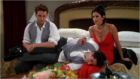s05e1- "The One After Ross Says Rachel"
Ross's nuptials continue after his slip-of-the-tongue but wedded bliss doesn't follow. Monica and Chandler try continuing their affair but can't steal a moment alone.
- s05e2 - "The One With All The Kissing" 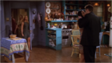
Ross's attempts at reconciling with Emily go unheeded. Chandler and Monica's affair is challenged by their "Not-in-New York" rule.
- s05e3 - "The One Hundredth"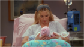
Phoebe is rushed to the hospital, where triplets are born. Joey gets hospitalized next - when his sympathy labor pains turn out to be kidney stones. An unsuspecting Rachel arranges a date for Monica with a male nurse.
- s05e4 - "The One Where Phoebe Hates PBS" 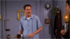
Phoebe resents Joey's PBS telethon gig because of a long-running grudge she holds against the network. To cover up her affair with Chandler, Monica tells Rachel she's dating someone from work.
- s05e5 - "The One With The Kips" 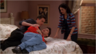
Monica and Chandler go to Atlantic City for a weekend by themselves. Ross tries to tell Rachel they can't be friends once Emily arrives in New York.
- s05e6 - "The One With The Yeti" 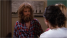
While rummaging in the storage room, Monica and Rachel meet a hairy neighbor they first mistake for a yeti. To smooth things over with Emily, Ross agrees to de-Rachelize his apartment.
- s05e7 - "The One Where Ross Moves In" 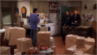
With his marriage on the rocks, Ross moves in with Chandler and Joey. Rachel is convinced that her neighbor Danny is trying to seduce her with mind games.
- s05e8 - "The One With All The Thanksgivings" 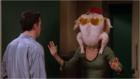
The gang reminisces about their worst Thanksgivings. Phoebe's takes her back to 1862. Elaborate tales are spun to try and uncover Monica's worst memory.
- s05e9 - "The One With Ross' Sandwich" 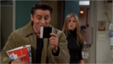
Ross is enraged when someone at work steals his Thanksgiving leftovers sandwich. Joey threatens to crack under the strain of knowing about Monica and Chandler's affair.
- s05e10 - "The One With The Inappropriate Sister"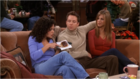
Monica maneuvers Rachel and Danny into dating but Rachel has second thoughts after observing Danny's unusually close relationship with his sister.
- s05e11 - "The One With All The Resolutions" 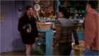
As the new year approaches, everyone makes resolutions, some more realistic than others. Ross's resolution causes him to wear hot leather pants on a date...perhaps too hot.
- s05e12 - "The One With Chandler's Work Laugh" 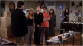
Monica uncovers the fake laugh Chandler reserves for his boss's bad jokes. Rachel is upset that Monica hasn't 'fessed up about her affair. Word comes of Emily's remarriage plans.
- s05e13 - "The One With Joey's Bag" 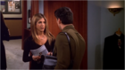
When Rachel helps Joey change his image to help him land an acting gig, she includes a shoulder bag that's rather purselike. Phoebe is shocked when her dad attends her grandmother's funeral.
- s05e14 - "The One Where Everybody Finds Out" 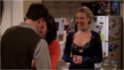
When Phoebe finds out about the Monica/Chandler affair, she tests Chandler via flirtation. Ugly Naked Guy's apartment goes up for rent and Ross wants it.
- s05e15 - "The One With The Girl Who Hits Joey" 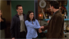
When Joey starts dating Katie, he finds she packs a painful punch. Ross has trouble making friends with his new neighbors.
- s05e16 - "The One With The Cop" 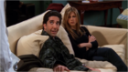
Phoebe finds a police badge inside the Central Perk sofa. Rather than return it, she decides to embark on a "good-deeds" campaign. Joey is unnerved by his romantic dream about Monica.
- s05e17 - "The One With Rachel's Inadvertent Kiss" 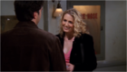
After a job interview, Rachel impulsively kisses her potential boss on the cheek. Joey tries to find a hot girl who lives in Ross' apartment but instead ending up in Ross' apartment.
- s05e18 - "The One Where Rachel Smokes" 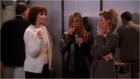
Rachel takes up smoking at her new job as a way of making inroads with the boss. Ross' son Ben joins Joey on an audition for a soup commerical.
- s05e19 - "The One Where Ross Can't Flirt" 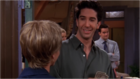
Joey's Italian-speaking grandma joins the gang in watching his Law & Order debut. Ross decides to order lots and lots of pizza in order to flirt with the delivery girl.
- s05e20 - "The One With The Ride-Along" 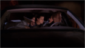
As Emily's wedding nears, the group does its best to distract Ross. A gunshot and a meatball sandwich take center stage when the guys go out on the beat with Phoebe's cop boyfriend.
- s05e21 - "The One With The Ball" 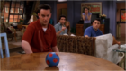
Phoebe asks Chandler to talk Gary out of asking her to move in with him. To fulfill a childhood dream, Rachel buys a sphinx cat which doesn't behave as planned.
- s05e22 - "The One With Joey's Big Break" 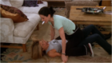
Joey is excited about landing a lead role in a movie shooting just outside Las Vegas - but furious with Chandler after he confesses his doubts that it will be his "big break."
- s05e23 - "The One In Vegas, Part 1" 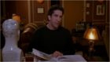
After his film gig falls through, Joey begs Chandler not to visit. But when Monica decides to celebrate her one-year anniversary with Chandler in Vegas, no one wants to be left behind.
- s05e24 - "The One In Vegas, Part 2" 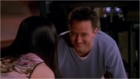
Joey tries to convince a blackjack dealter with identical hands to join him in a business venture. While playing craps with Monica, Chandler makes the bet of a lifetime.